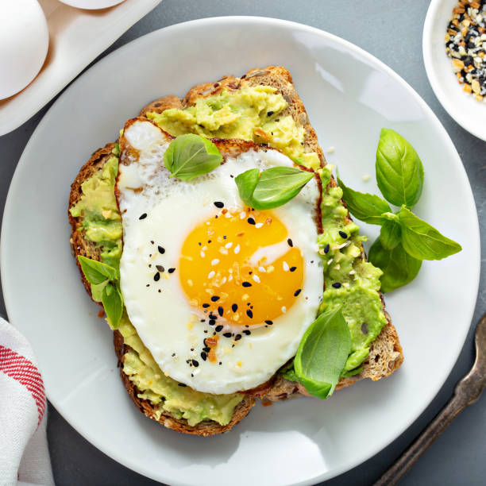

Avocado Toast with Poached Egg
Description
Avocado Toast with Poached Egg is a fresh and satisfying breakfast that combines creamy mashed avocado with a perfectly poached egg on crispy toasted bread. The rich yolk creates a delicious, velvety sauce that pairs beautifully with the smooth avocado.
This easy recipe shows you how to prepare a flavorful avocado spread and achieve a perfectly poached egg for a healthy, café-style meal. Finish with a pinch of salt, black pepper, and chili flakes or fresh herbs for extra flavor.
Steps
- Bring a small pot of water to a gentle simmer and add a splash of vinegar to help the egg hold its shape while poaching.
- Crack the egg into a small bowl, create a gentle whirlpool in the water, and carefully slide the egg into the center. Cook for 3 to 4 minutes until the white is set and the yolk remains soft.
- While the egg is cooking, toast the bread slices until they are golden brown and crisp.
- Cut the avocado in half, remove the pit, scoop the flesh into a bowl, and mash it with a fork. Season with salt, black pepper, and a squeeze of fresh lemon juice.
- Spread the mashed avocado evenly over the warm toasted bread.
- Carefully lift the poached egg from the water using a slotted spoon and gently pat it dry with a paper towel.
- Place the poached egg on top of the avocado toast and finish with chili flakes, freshly ground black pepper, and chopped herbs if desired. Serve immediately.